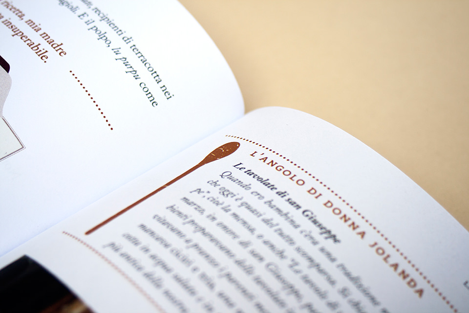

__include('partials/head.html')
    <body class="" id="pym">
        <div class="main-wrap m-scene" id="main" >
				__include('partials/header_interna.html')
				<div id="main" class="scene_element scene_element--fadein">
            <!-- ........................................................... -->
            <section class="gallery-container">
					<div class="gallery-content">
					<div></div>
					<div></div>
					<div></div>
					<div></div>
					<div></div>
					<div></div>
					<div></div>
					<div></div>
					<div></div>
					<div></div>
					</div>
					<div class="slick-dots"></div>
            </section>
			<div class="depth-wrapper">
            <!-- ........................................................... -->
				<section class="detail">
					<div class="content jgrid">
						<div class="left-column">
				      	<h2 class="tit2">“L'altra” passione di Al Bano in un libro con tutti i colori e i sapori della Puglia.</h2>
                  </div>
				   	<div class="right-column">
					   <p class="txt2">Al Bano e Jolanda Carrisi, “La cucina del sole”, Mondadori</p>
				</section>
            <!-- ........................................................... -->

            <!-- ........................................................... -->
			</div>
				__include('partials/footer.html')
			</div>
        </div>
     __include('partials/scripts.html')
   </body>
</html>
